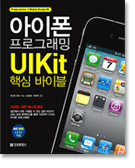

아이폰 프로그래밍 UIKit 핵심 바이블

- 저 자 토코로 유타
- 역 자 김은철 , 유세라
- 페이지 512 페이지
- ISBN 978-89-5674-530-5
- 인터페이스 빌더는 필수인가?
- 대답은 물론 "아니다"이다. 이 책에서는 기본적으로 인터페이스 빌더를 사용하지 않고 진행한다. 인터페이스 빌더를 사용하면 은폐되는 부분이 생기기 때문이다. 이 책은 UIKit의 내용에 초점을 맞춰 설명하고 있다. UIKit의 기능이나 움직임이 블랙박스화 된 상태로는 내용을 정확하게 알 수 없기 때문이다. 뒤집어 말하면 이 책의 내용을 이해하는 것은 인터페이스 빌더에서 블랙박스화 되어 있는 부분을 배우는 것이라고 할 수 있다.
- UIKit이란?
- UIKit는 모든 iPhone/iPad 애플리케이션의 핵심이 되는 프레임워크이다. UIKit는 애플리케이션의 기본 부분을 제어하고 터치 판넬 조작이나 모션 등 사용자 조작을 감지하며, 화면 표시를 하기 위한 각종 기능을 제공한다. UIKit 지식을 잘 이해한다면 보다 능률이 높고 결함이 적은 iPhone/iPad 애플리케이션을 개발할 수 있게 될 것이다.